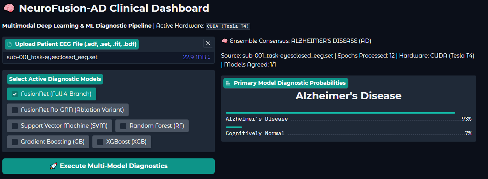

PFE · Acti-Sens Lab · 2026NeuroFusion-AD — Alzheimer's Detection from EEG
Research pipeline combining raw EEG, wavelet scalograms and 552 engineered biomarkers with attention-based deep learning. Built at Acti-Sens Lab, with subject-wise evaluation and a Gradio dashboard for model comparison and explainability.